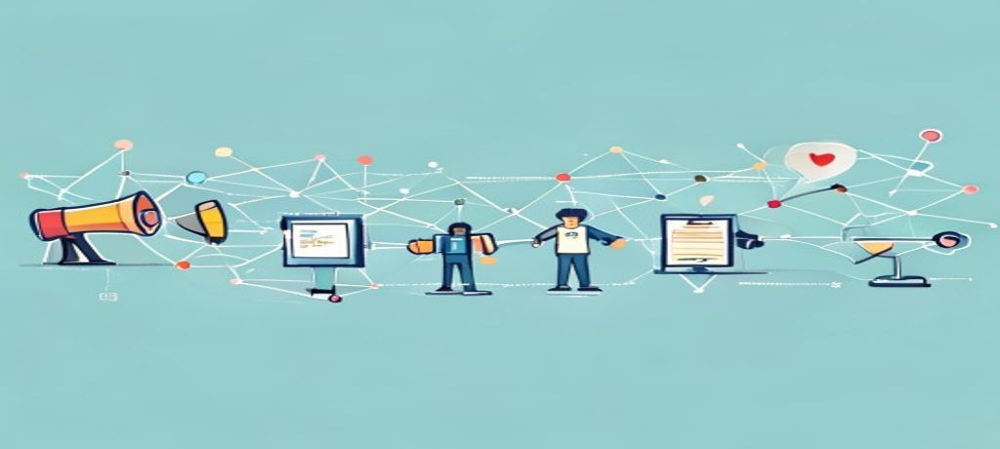
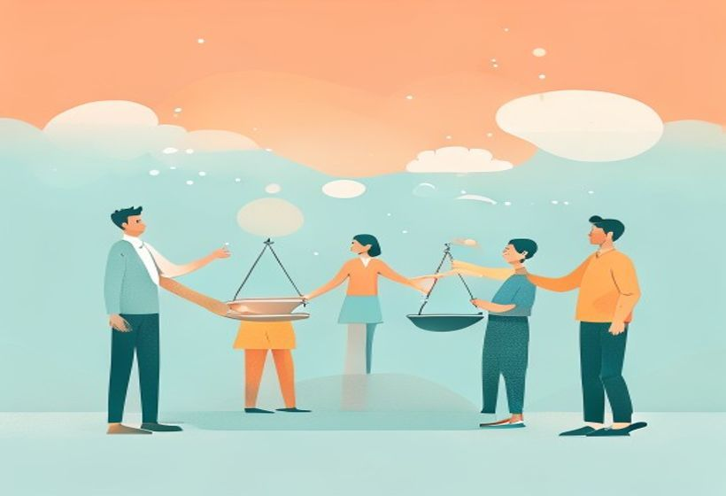

De dónde vienen, en qué se diferencian de la publicidad, y por qué hoy van de una cosa: ganarse la confianza de la gente.
Las RRPP son el puente de confianza entre una organización y la gente que le importa.
Las Relaciones Públicas son el arte de que una organización y la gente que le importa se entiendan y se fíen mutuamente — no vendiendo, sino ganándose la confianza poco a poco.
🧠 Los conceptos
Despliega cada tarjeta, léela con calma y márcala como entendida. La barra de arriba irá subiendo.
Son la disciplina que se encarga de que una organización (empresa, gobierno, ONG, universidad…) y las personas que le importan —sus públicos o stakeholders— tengan una buena relación y confíen unas en otras. No van de vender, sino de construir y cuidar la imagen, la reputación y la confianza a largo plazo.
Definición de libro: «Disciplina estratégica de comunicación que busca construir y mantener relaciones mutuamente beneficiosas entre una organización y sus públicos».
Se confunden mucho, pero buscan cosas distintas. La clave está en tres preguntas: ¿qué buscan?, ¿con quién?, ¿en cuánto tiempo?
| Disciplina | ¿Qué busca? | ¿Con quién? | ¿Cuándo? |
|---|---|---|---|
| RRPP | Reputación y confianza | Todos los públicos (stakeholders) | Largo plazo |
| Marketing / Publicidad | Vender, valor económico | Clientes / consumidores | Corto–medio plazo |
| Periodismo | Informar con objetividad | Audiencia masiva | Inmediato (según el medio) |

En poco más de un siglo, las RRPP han pasado de «gritar» a «conversar con todos a la vez». Cuatro etapas:
En las RRPP modernas, la confianza es el bien más valioso de una organización. Funciona como un colchón: si un día metes la pata (una crisis), la confianza que tenías acumulada amortigua el golpe. En un mundo de públicos críticos y desconfiados, ganarse la confianza es difícil y vale oro.

El profesional de RRPP es el puente entre lo que la organización quiere y lo que la sociedad espera. Aconseja a la dirección, construye legitimidad y gestiona cómo se percibe la organización. Lleva varios «sombreros»:
| Rol | Qué hace |
|---|---|
| Estratega | Diseña el plan que alinea los objetivos con el mensaje público |
| Gestor de crisis | Responde rápido, con ética y cabeza fría |
| Portavoz | Es la voz pública de la organización, con autenticidad |
| Consultor | Asesora en imagen, posicionamiento e identidad |
| Mediador | Facilita el diálogo entre partes en conflicto |
Hoy una crisis explota en minutos (un vídeo viral) y hay que reaccionar ya. La inmediatez digital ha cambiado las competencias: hay que monitorizar siempre, responder ágil y ser radicalmente transparente.
El caso del vídeo viral, por plazos:
| Plazo | Qué hacer |
|---|---|
| Primeras 2 horas | Monitorizar + un único portavoz + mensaje breve (hechos, empatía, disculpa si procede) |
| Primeras 24 horas | Medidas concretas (compensación, revisar protocolos) + ir actualizando en tus canales |
| Después | Auditar lo ocurrido, cambios verificables y contar el aprendizaje |
5 competencias clave del buen profesional:
¿Dónde trabaja? En todos los sectores: empresarial, gubernamental, no lucrativo (ONG), educativo y sanitario. Y en distintas estructuras: agencias especializadas, departamentos internos, consultoras independientes y equipos virtuales.
El modelo IPEE es el paso a paso para hacer cualquier campaña de RRPP. Cuatro fases en orden:
| Fase | Qué se hace |
|---|---|
| I · Investigación | Analizar la situación, conocer a los públicos, auditar la comunicación |
| P · Planificación | Fijar objetivos SMART, estrategias, tácticas y calendario |
| E · Ejecución | Poner en marcha las acciones, gestionar recursos y coordinar el equipo |
| E · Evaluación | Medir el impacto (métricas, ROI) y ajustar para mejorar |
🃏 Flashcards
Toca cada tarjeta para girarla. Tapa la definición con la mano y comprueba si te la sabes.
✅ Test rápido
6 preguntas tipo examen. Elige una opción y te corrige al momento con la explicación.
⭐ Preguntas del final de la presentación
Estas son las preguntas de Autoevaluación tal cual aparecen en la última diapositiva. Léelas, intenta responder de cabeza y luego despliega la respuesta.